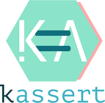

|
kassert
1.0.0
Assertion library for KaMPIng
|
|
kassert
1.0.0
Assertion library for KaMPIng
|

The KASSERT macros accepts 1, 2 or 3 arguments.
You can also use C++ streams to build custom error messages on the fly.
Use THROWING_KASSERT to throw an exception if the assertion fails. This requires the target property KASSERT_EXCEPTION_MODE to be set to ON on the target linking against kassert. If exception mode is not enabled, THROWING_KASSERT acts the same as KASSERT.
You can also throw a custom exception type using the THROWING_KASSERT_SPECIFIED macro:
The constructor of your custom exception type must be called with a std::string as its first argument, followed by the remaining arguments [, ...] passed to THROWING_KASSERT_SPECIFIED.
Assertions are enabled if their assertion level (optional third parameter of KASSERT) is less than or equal to the active assertion level. The default level is kassert::assert::normal (30). Set the CMake target property KASSERT_ASSERTION_LEVEL on you target linking against kassert to the numeric value of the desired assertion level. If omitted, the assertion level is set to 0, which disables all assertions.
You are free to define your own assertion levels. For instance:
Doxygen 1.9.2 or newerKAssert can be embedded in other libraries with custom namespaces and macro names to prevent naming conflicts.
When to vendor:** Use vendoring when developing a library that uses KAssert internally to avoid conflicts with user code that might also use KAssert.
KASSERT_VENDOR_ID - Base identifier for deriving other variablesKASSERT_CMAKE_NAMESPACE - Prefix for all CMake targetsKASSERT_CXX_NAMESPACE - C++ namespace for the libraryKASSERT_INCLUDE_SUBDIR - Subdirectory for header installationKASSERT_PREFIX - The prefix for all macrosThis generates macros like MYASSERT() instead of KASSERT().
KAssert is released under the MIT License. See ./LICENSE for details.